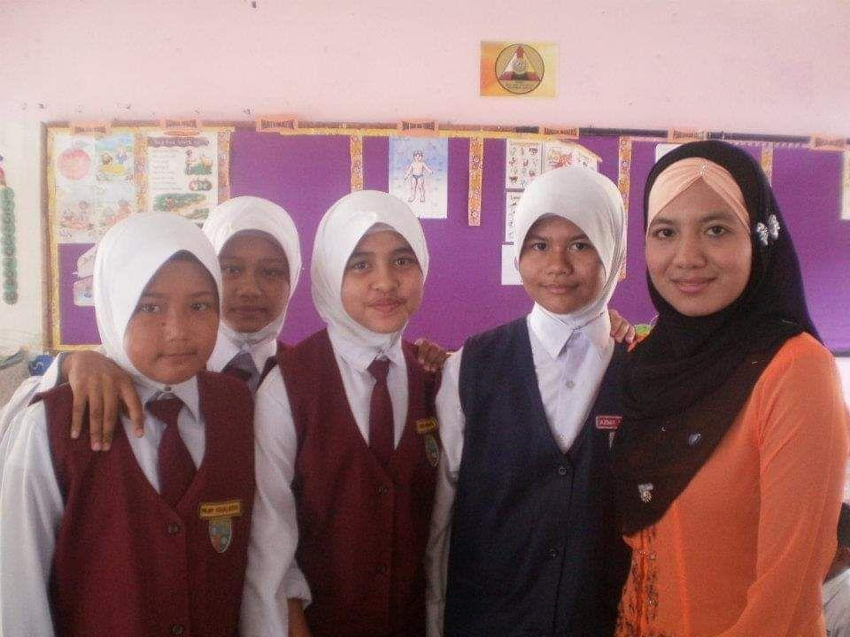
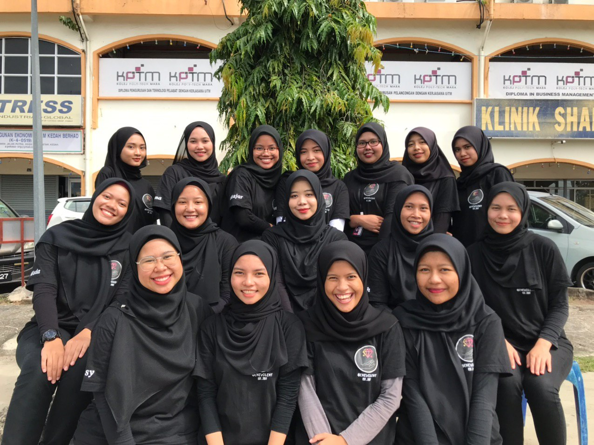

My Education
Don't wait until you reach your goal to be proud of yourself. Be proud in every step you take.
 2006 - 2011 SK Kota Lama Kanan Ujian Pencapaian Sekolah Rendah (UPSR) I started my primary school in 2006. My school is not too far from my house so I went to school by bicycle. Since my school is near, I woke up late in the morning and get ready to school. Sometimes, when I do not want to go to school, I will hide in my closet until my parents go to work. The best thing about primary school is when the teacher is absent, my classmates and I will find something fun to play. We used to play Batu Seremban, 'Mak-Mak', or open a restaurant. My UPSR result is 4A 1B. For me, it is quite great since I am not a hardworking student and I do not like to study. |
 2012 - 2014 SMK Simpang Beluru Pentaksiran Tingkatan 3 (PT3) I started my secondary school in 2012. I got entered into Kelas Rancangan Khas (KRK). I also stayed at hostel because the school is far from my house. I have 30 classmates which made my class looks so crowded. All my classmates are so naughty and fun. There was one time when the class monitor is sleeping and we pranked him. We said "Wake up, the teacher is coming" and the class monitor who is sleeping at the moment, immediately stood up and said "Bangun semua, Asalammualaikum Cikgu," but the teacher is not there. The whole class are laughing like crazy. I cherished every moment during my PT3 period. For PT3, I got 3A 4B 2C 1E. I do not want complained about my result because I am the one who is lazy and do not want to study |
 2015 -2016 SMK Simpang Beluru Sijil Pelajaran Malaysia (SPM) Based on my PT3 result, I can only entered the third class which was Perdagangan Class because I did not get credit for subject Mathematics and Science. I just follow the flow because no matter which class I took, I need to adapt with it. Starting from here, I got to know the students that I never seen which are from my batch as well. I am struggling a bit because we need to take Additional Mathematics for additional subject. I never passed the exam but gratefully, I passed it during my SPM. During this period, I am so grateful to have a helpful deskmate. She is the one who helped me through this phase. I always sleep in Perdagangan's class because the class is usually at noon so I can't stand the sleepiness. My teacher always do the past year questions and everyone need to answer it by turn. When it is my turn, my deskmate woke me up, told me which question is it and she gave me the answer as well. She always help me with various subject such as Accounting, Additional Mathematics and Perdagangan. While me, I usually help her with English. My classmates are so helpful as well because when someone did not finish the homework, there is always someone who will offer to teach or lend them the books. My result for SPM is predictable as it is balance with my effort. I got 3B+ 3B 2C+ 1E and the E is Addmath. At least, I passed Addmath paper. |
 2017-2020 KPTM ALOR SETAR DIPLOMA IN OFFICE MANAGEMENT AND TECHNOLOGY The fourth level of my education is diploma. At first, I do not want to further my studies in diploma because I do not want to stay away from my family so I decided to futher my studies in Form 6. After a month studying in Form 6, I got an offer letter from KPTM Alor Setar to futher my studies in Diploma in Office Management and Technology. My mum insisted me to go there. I had no choice so I just give it a try. In KPTM Alor Setar, I met a lot of new friends from different states. At first, it really hard to adapt with the new environment since I am a little timid but as time goes by, I grow fond towards my friends in diploma. I learned a lot of new things during my diploma. I learned how to handle an event, how to type faster (yet I do not used those skills), how to use a correct format for assigment and the list go on. I also learned how to be a good person, how to be a good listener and how to communicate with my friends in order not to hurt them in any ways. My CGPA for diploma is above 3.5 and I am proud of it. I do not think that I can get those pointer if I continue to pursue my studies in Form 6. |